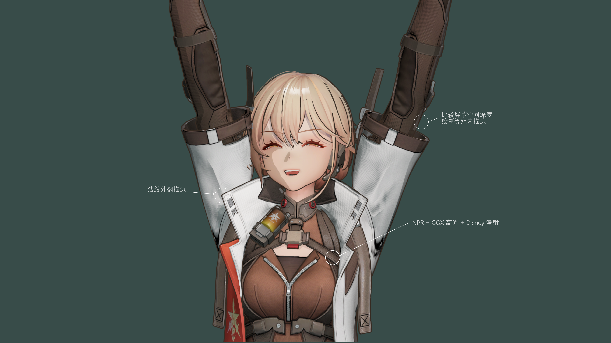
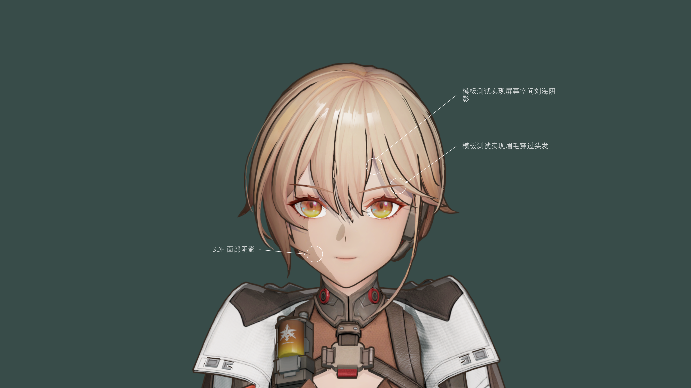
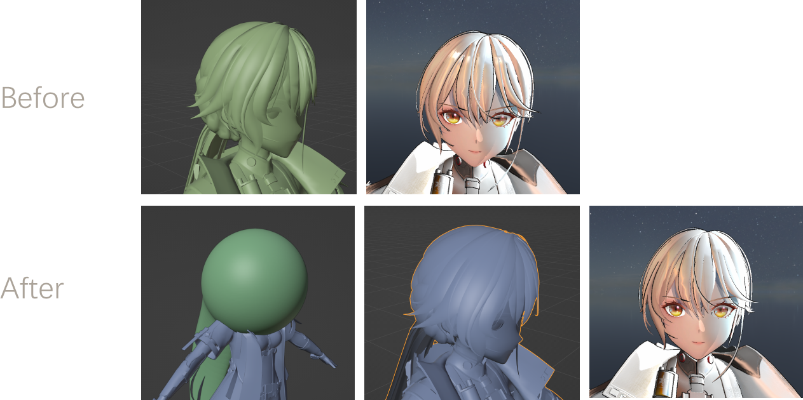
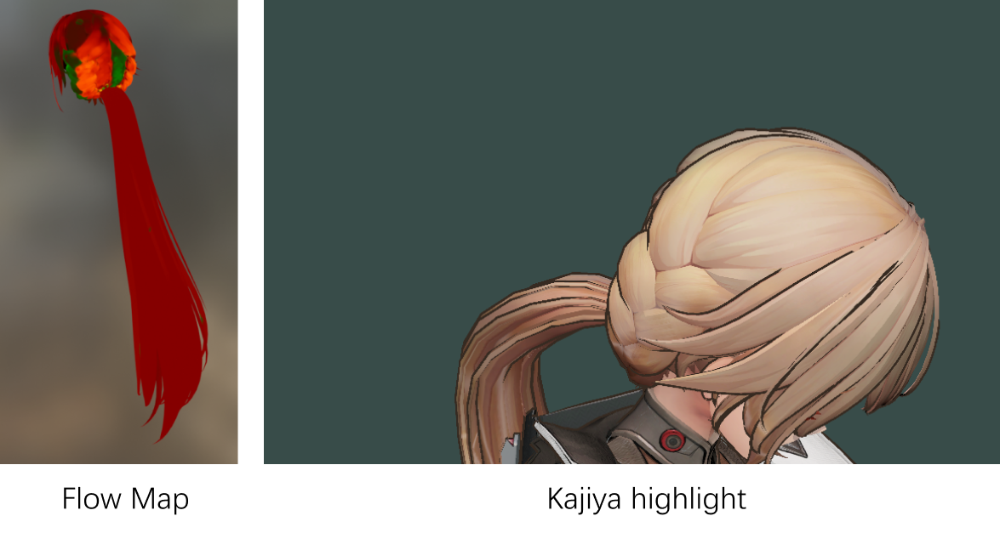
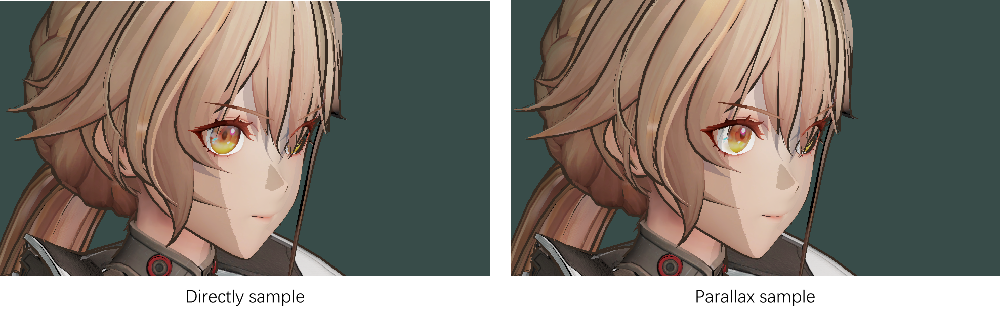
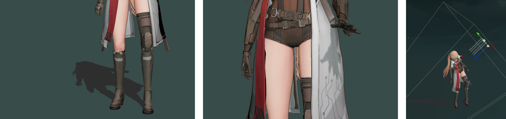

Fenglvv's Toon Shader
Japanese Style Characters Rendering. Model from Girls Frontier2 MMD.
Introduction
This shader shows part of the process of rendering a Japanese cartoon characterThe shader is based on Unity URP and utilizes URP RenderFeature to customize the rendering pipeline.
Shader features
- Outer stroke: use script to smooth normals and transform to tangent space, record to vertex color rgb, use alpha to control stroke thickness
Inside stroke: The screen space compares the model depth to the surrounding depth, and exceeds the threshold to draw an outside stroke
Basic coloring: Lambert + GGX highlights + ambient CubeMap + dark overlay gradient mapping

- SDF Face Shadow: Calculate the step value using the Angle between the character's forward direction and the light, dividing the SDF map into shaded and unshaded areas
Eyebrows through the hair: Write the hair and face into the template, with the eyebrows drawn at the end, above the face and hair
Screen Space Fringe Shadow: Write the face to the template, offset the hair along the direction of the light, and draw the shadow color on the template area

- Use the Vertex Color alpha channel to control the outer stroke thickness and trim the character's hair and face strokes

- Normals remap to optimize the highlight shape
The hair normal is mapped to a near-spherical shape to avoid the split between bright and dark bangs and get a smooth distribution of light and dark hair

- Draw a Flow Map for the hair along the direction of the highlight flow, convert it to the Tangent space and store it in the map
Drawing Double-layer highlights using the kajiya-kay method

- Use the parallax mapping to draw the eyeball so that it appears to have depth

- Use a shadow camera in the same direction as Directional Light to separately record the depth of a specific tag object, and compare the depth of the shadow camera in shader to achieve high-precision character self-projection

Refence list
Unity tool development: Normal Smoothing tool